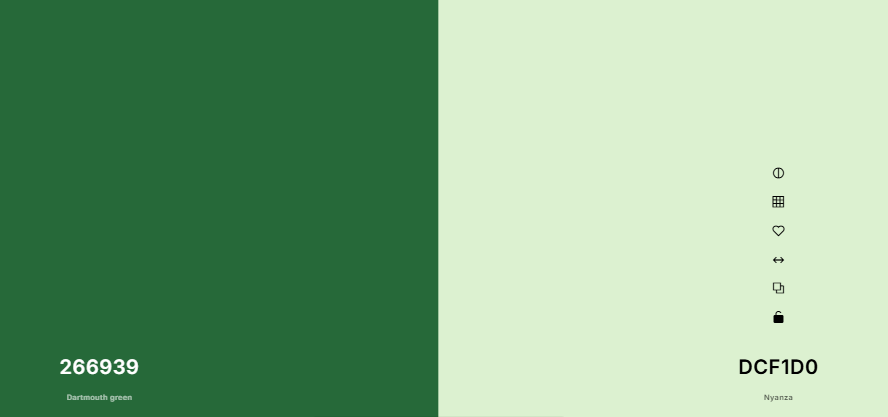
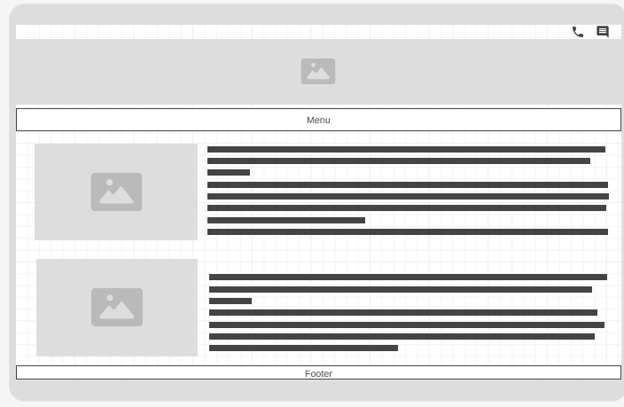
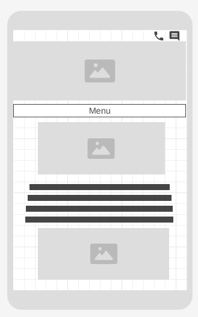

Site Name
Quevedo Chamber of Commerce,This name represents a city in which the chamber operates.
Our Purpose
The Quevedo Chamber of Commerce is a cantonal association with more than 500 projects executed for the activation and economic reactivation in the province of Los Rios, mainly in the Quevedo Canton.
Another of our purposes is to be able to provide a sponsorship space to emerging entrepreneurs in the city by holding events, contributions and awarding outstanding projects.
Scenarios
What events will the chamber be holding this semester that promote business-to-business networking?
What have been some needs growing up in the city?
What are some issues that can be present to the entrepreneurs in this dangerouscity?
Color Schema
Knowing that green, and white are part of our flag colors, we thought we would take it to the next level by using colors like dartmouth green (266939)and Nyanza(DCF1D0).
Dartmouth green, white and black will be used primarily in typography Nyanza will be used in the background.
Typography
We believe that the site should be practical and understandable, that is why we have chosen to use the Merriweather font.
Wireframe
Large viewport
Mobile viewport
